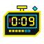
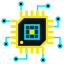

Overclock
The heads-up display of a control rig, running a session on you. Matte black panels with clipped corners, frame brackets, hex readouts and a scanline, in acid yellow and data cyan. Ratings charge up, the favourite locks on, the O counter overloads and every hover glitches.
Palette
Matte black with a faint dot grid carries the page, and the panels are a deep teal-black. Acid yellow marks what the system wants from you: primary buttons, the active tab, ratings and the lock. Data cyan carries readouts, info and the scan line. Alert red is kept for danger and misses, magenta appears only as a glitch fringe, and yellow-and-black hazard stripes mark danger and locked states.

TypeChakra Petch at 600 to 700 is the squared display face for the wordmark, section titles, card titles and the system's lines. Share Tech Mono carries every readout, label and number: hex IDs, durations, ratings and the session clock. Descriptions and settings stay on the system font, so long text reads easily. Both fonts ship inside the plugin.
Motifs and glyphs
Flat technical line art in acid yellow and data cyan on teal-black: a neural jack plug on its cable, a targeting reticle, an optical implant with an aperture iris, a microchip, a digital padlock with a hazard band, a wired controller and a countdown timer. They appear on this page only; the theme ships the glyphs, the hex dump and the flat scope trace for empty lists. The flat glyphs are CSS masks, so they take any fill.

microchipButtons
Buttons are flat panels with the bottom-right corner clipped at 45°. Primary is solid acid yellow with black type. Secondary is a teal-black panel that turns yellow under the pointer, and the chosen item in a group goes cyan. Scan and Generate are outlined in cyan and yellow, Identify is solid cyan, and Delete is red behind a strip of hazard stripes. A disabled button is locked behind faint stripes. Hovering slices the button and splits it red and cyan for 170ms.
Tags, ratings and favourites
Tags are clipped mono chips with a cyan status light. Ratings are five charge chevrons that fill left to right in yellow, with empty ones outlined, and hovering one lights every chevron up to it. The favourite is a targeting reticle that closes and locks with a small Locked tag. The O counter is an overload bolt. Clicking any of them throws square pixels, data shards and hex digits.
Cards
Cards are chamfered panels with corner brackets. On hover the brackets snap inward to frame the picture, a cyan scan line sweeps it once and a readout counts to 100%. The rating is a yellow tag with a mono number and a five-segment meter, progress is a segmented bar and the divider is a dashed rule with a tick at each end. Performers carry an ID readout and are targeted on hover. Audio-only scenes get a live oscilloscope trace and level meter. Pictures are never tinted: every effect on them comes with the pointer and clears with it.
Forms and menus
Inputs are dark fields with a bottom rule and corner ticks. Focus turns the frame yellow and starts a blinking block. Menus, popovers and toasts are clipped panels with a yellow left rule, and the tooltip is a small yellow tag. The modal header is a hazard-striped band for destructive dialogs and a plain HUD bar otherwise.
Stash-box
The Tagger stays still because people clear hundreds of rows in a sitting, so it gets no glitch, scan line or motion. The chosen row gets a yellow edge and the chosen select a yellow frame. Matches read in cyan, warnings in yellow and misses in red. StashID links are a cyan tag with the ID on a chip.
-
Studio: Neon SaintsNeon Saints▾Performer: Kira VoltSelect Performer▾Performer: Nova Hex Matched: Nova Hex
-
Night Shift
Lowlight Labs · 2026-02-14
Navigation
The navbar is a HUD strip with a yellow underline and tick marks, and the active page sits in a yellow chamfered tab with a status pip. A session clock starts when you arrive and ticks. On a phone held upright Stash docks the bar at the bottom, and the underline moves to its top edge. Tabs light yellow with a heavy underline, and Stash's pagination is a row of clipped keys with the current page lit.
Loading and empty
The loader is a segmented bar that counts its percentage up over a scrolling hex dump, and Calm mode holds it on a still frame at 64%. An empty list gets a dead scope with a flat cyan trace and the line No signal, and keeps the scope with no line under Plain labels or in SFW mode.
Loading…
Copy
The control system running the session, short and cold, written like a game that is playing you. Matches are exact and whole-text, so titles, tags and descriptions are never touched. Plain labels and Stash's SFW mode turn them off.
| Stash says | Overclock says |
|---|